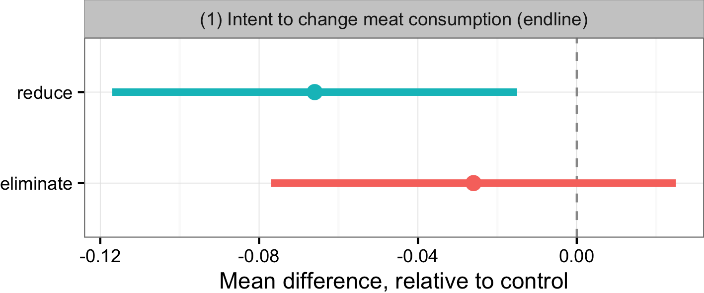
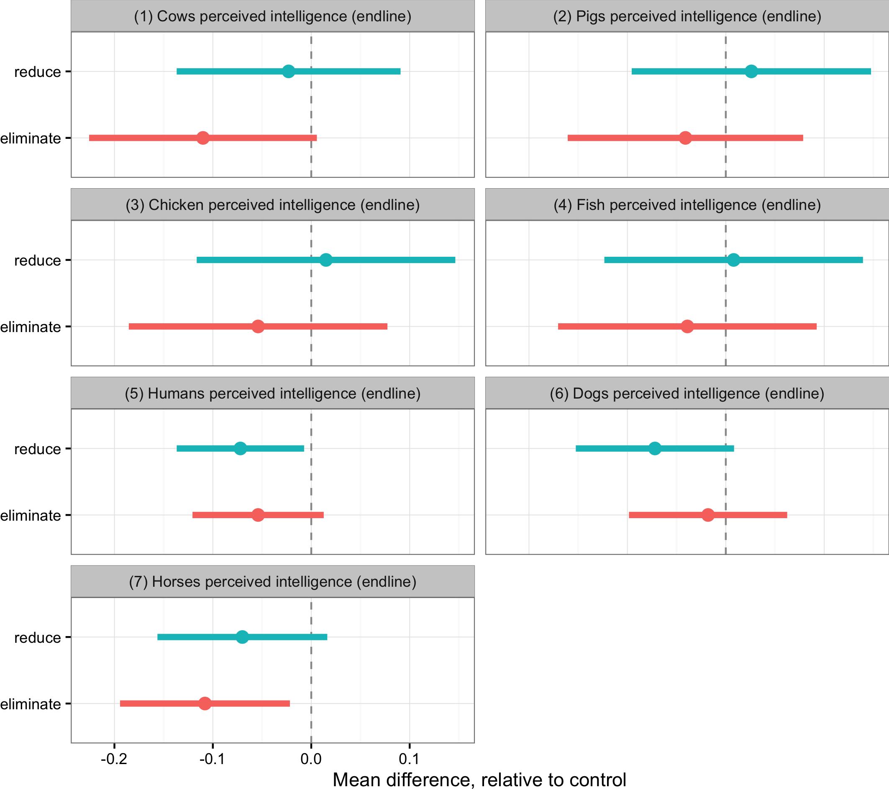

The effects of "reduce" and "eliminate" appeals on individual meat consumption
Takeaways
- 2,237 MTurk subjects were randomly assigned to receive one of three news articles: a reduce appeal, eliminate appeal, or control appeal.
- Meat consumption and attitudes were measured 1 week before treatment and 5 weeks after.
- The reduce and eliminate appeals decreased self-reported meat consumption by 0.9 - 1.1 servings of meat consumed per week (6-7%).
- No evidence that the reduce appeal was any more/less effective than the eliminate appeal.
Motivation
- There is a growing literature on vegetarianism, examining:
- individual motivations for going vegetarian;
- predictors of vegetarian diet adoption;
- reasons for vegetarian recidivism;
- how meat-eaters view vegetarians;
- ...
- However...
- There is little experimental research examining the effectiveness of interventions for reducing individual meat consumption.
Research questions
- Does reading an article about factory farming inspire people to reduce their consumption of animal products?
- Is it more effective to ask readers to stop eating meat entirely, or to ask them to reduce their meat consumption without necessarily eliminating it from their diet altogether?
Research design
- Three-wave MTurk survey experiment:
- Week 0: Baseline survey ($N=3,076$).
- Week 1: Treatment exposure ($N=2,685$).
- Week 6: Endline survey ($N=2,237$).
- Attrition: $2,237$ of $3,076$ participants completed all three waves (72.40%).
Experimental arms
1. Control appeal
Participants were asked to read a news article outlining the benefits of walking as a form of exercise.

Experimental arms
2. "Reduce" appeal
Participants were asked to read a news article about factory farming that described a growing number of people who are reducing - but not entirely eliminating - their meat consumption and encouraged readers to do the same.

Experimental arms
3. "Eliminate" appeal
Participants were asked to read a news article about factory farming that described a growing number of people who are eliminating meat from their diet and encouraged readers to do the same.

Research design
- Three-wave MTurk survey experiment:
- Week 0: Baseline survey ($N=3,076$).
- Week 1: Treatment exposure ($N=2,685$).
- Week 6: Endline survey ($N=2,237$).
- Attrition: $2,237$ of $3,076$ participants completed all three waves (72.40%).
Research design
- Three-wave MTurk survey experiment:
- Week 0: Baseline survey ($N=3,076$).
- Week 1: Treatment exposure ($N=2,685$).
- Week 6: Endline survey ($N=2,237$).
- Attrition: $2,237$ of $3,076$ participants completed all three waves (72.40%).
Outcome measures
Main Outcomes:
- Number of servings of meat per week.
- Attitudes towards factory farming. (1-7 agree/disagree)
Secondary outcomes:
- intentions to change meat consumption. (1-7 scale)
- perceptions of descriptive norms towards meat consumption. (1-7 agree/disagree)
- perceptions of vegetarians. (1-10 feeling therm.)
- perceived difficulty of reducing meat consumption. (1-7 scale)
- perceptions of animal intelligence. (1-7 scale)
- information exposure. (# discussions, # media items read in past 30 days)

Model specification
$$y_i = \alpha_0 + \tau_0 \mathbf{1}(reduce_i) + \tau_1\mathbf{1}(eliminate_i) + \sum_{k=1}^K \delta_k b_i$$
- $y_i =$ outcome measure for subject $i$.
- $\alpha_i =$ model intercept.
- $\tau_0 =$ Average treatment effect (ATE) of reduce appeal.
- $\tau_1 =$ Average treatment effect (ATE) of eliminate appeal.
- $\mathbf{1}(reduce_i) =$ 1 if assigned to reduce appeal, 0 otherwise.
- $\mathbf{1}(eliminate_i) =$ 1 if assigned to eliminate appeal, 0 otherwise.
- $\delta_k =$ block coefficient.
- $b_i =$ block indicator.
Self-reported meat consumption
Effects on self-reported meat consumption
Effects on intentions to change meat consumption
Effects on consumption, by animal type
Effects on attitudes
Effects on information exposure

Effects on perceptions of animal intelligence
Effects on perceived difficulty of reducing meat consumption
Robustness
- Concern: was there differential attrition across treatment groups, leading to compositional differences that bias the estimated treatment effects?
- Response: No. Pre-treatment outcomes and covariates are balanced across groups.
Pre-treatment balance (reduce)

Pre-treatment balance (eliminate)

Robustness
- Concern: multiple hypothesis testing leads to false positives (p-hacking!).
- Response: results are robust to p-value corrections using a constraint on the weighted false discovery rate. (Benjamini and Hochberg 1997)
Robustness
- Concern: social desirability bias.
- Response:
- Would require subjects to make the link between treatment and survey 5 weeks later.
- We don't observe large effects on other variables prone to social desirability. (e.g. intentions to change, perceptions of animal intelligence)
- We don't observe effects on "placebo outcomes". (e.g. intent to change fruit/veg consumption)

Where do we go from here?
Avenues for further research:
- Examine longer term effects.
- Collect behavioral measures.
- Increase ecological validity (field experiments!).
- Examine a wider range of messaging appeals.
- Examine messaging appeals in other domains (e.g. leaflets, online ads).
Where do we go from here?
Practical implications:
- Are "reduce" appeals more effective than "eliminate" appeals?
- We did not find any evidence to suggest one appeal is more effective than another.
- Should animal advocates use explicit "reduce" and "eliminate" appeals instead of other messaging appeals they are currently using?
- Too early to say. We don't have strong evidence on the effectiveness of many appeals.
- Are the effects of reduce/eliminate appeals likely to be similar in mediums other than news articles (e.g. leaflets, online ads)?
- Not sure. This study only estimated the effects of reduce/eliminate appeals in the context of a news article.
The effects of "reduce" and "eliminate" appeals on individual meat consumption
- Read the working paper: osf.io/nxrx3/
- Raw data and code: github.com/bnjmacdonald/reducetarian-messaging-study
- Study pre-registration: osf.io/f3s25/
- Bobbie NJ Macdonald: bmacdon@stanford.edu
- Krystal D Caldwell: kcaldwell@awalab.org
- Gregory D Boese: gboese@sfu.ca
Effects on self-reported meat consumption